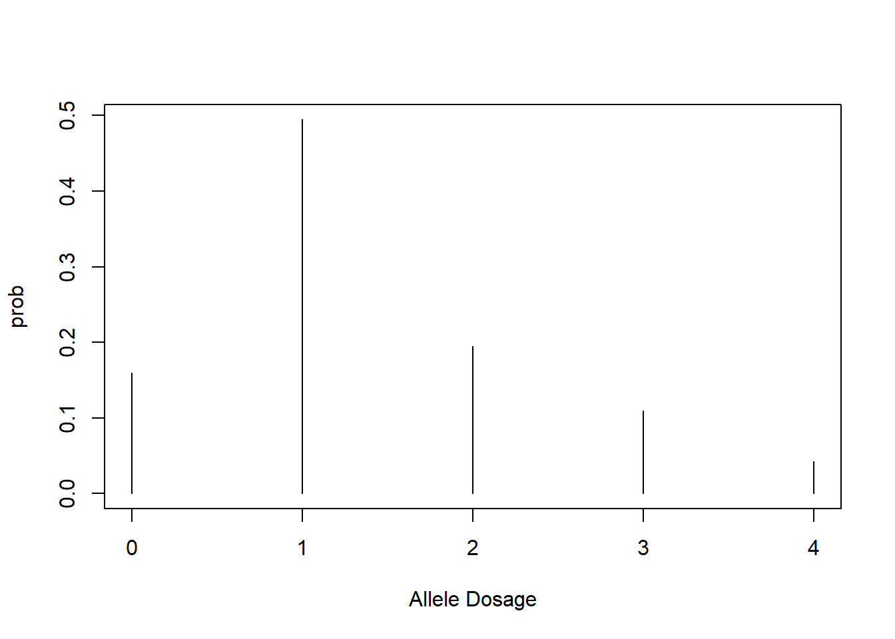

I play around with the functions important for the "ash" option in updog.
library(tidyverse)## -- Attaching packages --- tidyverse 1.2.1 --## v ggplot2 2.2.1 v purrr 0.2.4
## v tibble 1.4.2 v dplyr 0.7.4
## v tidyr 0.8.0 v stringr 1.3.0
## v readr 1.1.1 v forcats 0.3.0## -- Conflicts ------ tidyverse_conflicts() --
## x dplyr::filter() masks stats::filter()
## x dplyr::lag() masks stats::lag()library(updog)
data("snpdat")
ploidy <- 4
pivec <- runif(ploidy + 1)
pivec <- pivec / sum(pivec)
modeval <- 1.5
pk <- updog:::get_probk_vec(pivec = pivec, model = "ash", mode = modeval)
pivec## [1] 0.31824 0.33559 0.08529 0.13481 0.12606pk## [1] 0.15912 0.49471 0.19472 0.10943 0.04202plot(0:ploidy, pk, type = "h", ylim = c(0, max(pk)),
xlab = "Allele Dosage", ylab = "prob")
temp <- updog:::get_uni_rep(probvec = pk)
assertthat::are_equal(pivec, temp$pivec)## [1] TRUEsnpdat %>%
filter(snp == "SNP2") ->
smalldat
refvec <- smalldat$counts
sizevec <- smalldat$size
ploidy <- 6
aout <- flexdog_full(refvec = refvec, sizevec = sizevec,
ploidy = ploidy, model = "ash")## Mode: 0.5
## llike: -583
##
## Mode: 1.5
## llike: -542.4
##
## Mode: 2.5
## llike: -542.1
##
## Mode: 3.5
## llike: -542.1
##
## Mode: 4.5
## llike: -551.1
##
## Mode: 5.5
## llike: -563.6fout <- flexdog(refvec = refvec, sizevec = sizevec,
ploidy = ploidy, model = "f1")## Fit: 1 of 5
## Initial Bias: 0.3679
## Log-Likelihood: -528.5
## Keeping new fit.
##
## Fit: 2 of 5
## Initial Bias: 0.6065
## Log-Likelihood: -528.5
## Keeping new fit.
##
## Fit: 3 of 5
## Initial Bias: 1
## Log-Likelihood: -528.5
## Keeping new fit.
##
## Fit: 4 of 5
## Initial Bias: 1.649
## Log-Likelihood: -560.4
## Keeping old fit.
##
## Fit: 5 of 5
## Initial Bias: 2.718
## Log-Likelihood: -560.4
## Keeping old fit.
##
## Done!flexout <- flexdog(refvec = refvec, sizevec = sizevec,
ploidy = ploidy, model = "flex")## Fit: 1 of 5
## Initial Bias: 0.3679
## Log-Likelihood: -526.2
## Keeping new fit.
##
## Fit: 2 of 5
## Initial Bias: 0.6065
## Log-Likelihood: -525.4
## Keeping new fit.
##
## Fit: 3 of 5
## Initial Bias: 1
## Log-Likelihood: -532.9
## Keeping old fit.
##
## Fit: 4 of 5
## Initial Bias: 1.649
## Log-Likelihood: -532.9
## Keeping old fit.
##
## Fit: 5 of 5
## Initial Bias: 2.718
## Log-Likelihood: -532.9
## Keeping old fit.
##
## Done!## This should not happen
## ASH should have a likelihood between flexout and fout.
aout$llike## [1] -542.1fout$llike## [1] -528.5flexout$llike## [1] -525.4aout2 <- flexdog_full(refvec = refvec, sizevec = sizevec,
ploidy = ploidy, model = "ash", ashpen = 0,
bias = fout$bias, od = fout$od, seq = fout$seq,
update_bias = FALSE, update_od = FALSE,
update_seq = FALSE) ## Mode: 0.5
## llike: -630
##
## Mode: 1.5
## llike: -604.1
##
## Mode: 2.5
## llike: -571.3
##
## Mode: 3.5
## llike: -526.9
##
## Mode: 4.5
## llike: -525.7
##
## Mode: 5.5
## llike: -525.7## This is better!
flexout$llike## [1] -525.4aout2$llike## [1] -525.7fout$llike## [1] -528.5This R Markdown site was created with workflowr